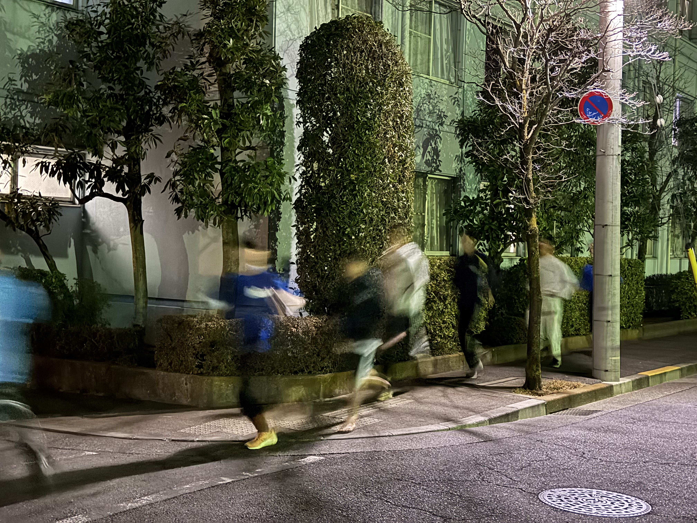
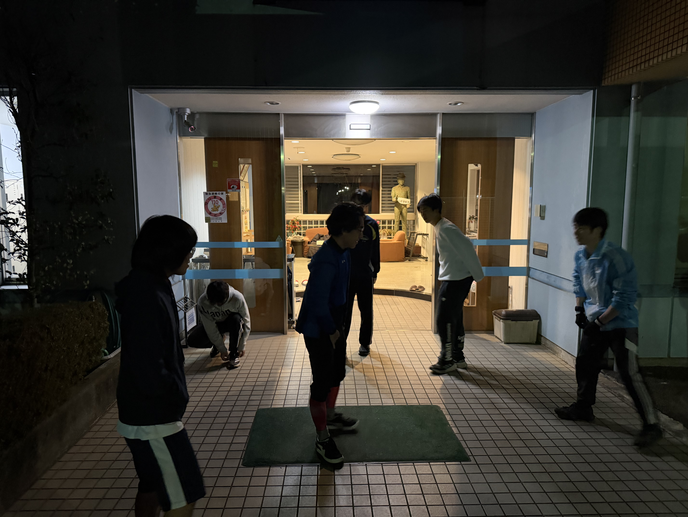

府中駅伝自主練習会を行いました

1月27日21時より、青雲寮の寮生6人が集まり、府中駅伝に向けた自主練習会を実施しました。大会本番まで残り2週間となり、寮内には自然と駅伝を意識した空気が広がっています。
急な呼びかけに集まった寮生たち
今回の練習会は、寮生の一人による急な呼びかけをきっかけに実現しました。夜の時間帯にもかかわらず、その声に応えるように寮生が集まり、自主的な取り組みの中に、青雲寮ならではの結束力を感じる場面となりました。

それぞれの目標を持って走り込む
練習では、4キロ完走を目標に走り切る者や、1キロ4分ペースに挑戦する者など、それぞれが明確な目標を胸に走り込みを行いました。冷え込む夜の空気の中でも、互いに声を掛け合い、刺激を受けながら前向きな雰囲気で練習を終えることができました。大会本番に向け、青雲寮は一丸となって着実に準備を進めています。
